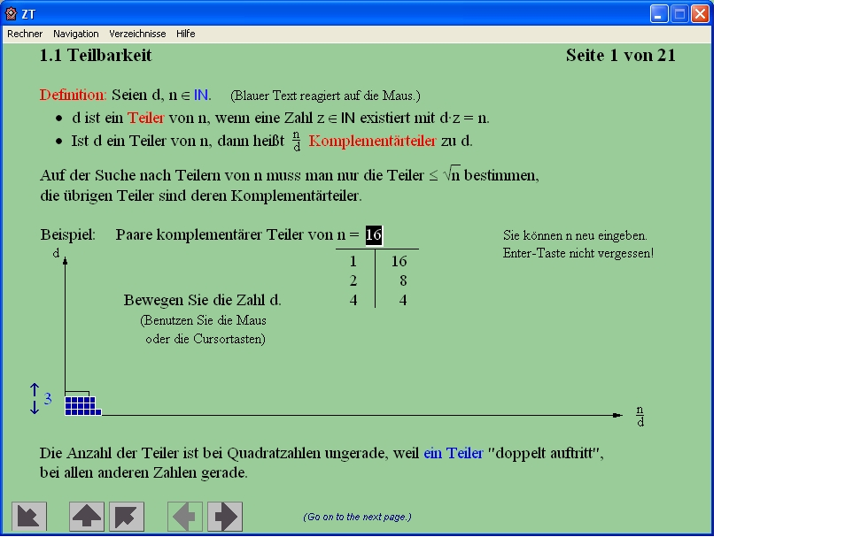
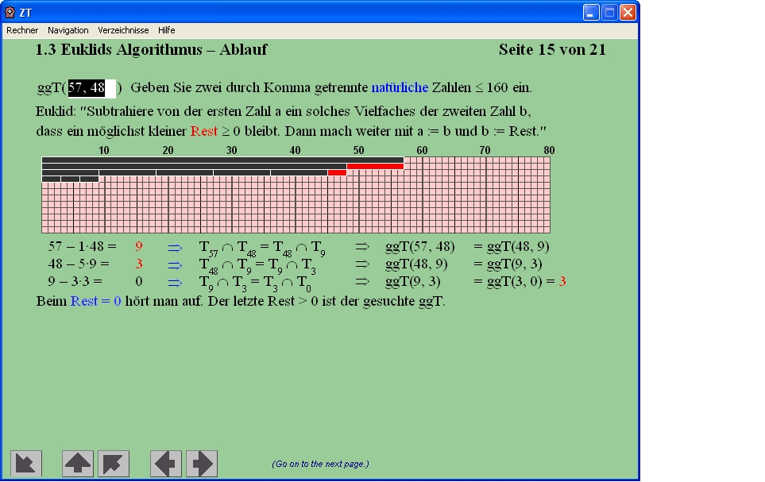
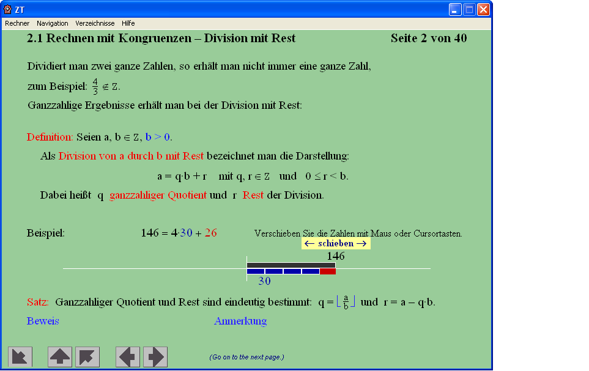

Sie erreichen diesen Dialog über den Menüeintrag Einzelverfahren \ Zahlentheorie interaktiv \ Lernprogramm für Zahlentheorie.
Das Lernprogramm "ZT" (Zahlentheorie) von Martin Ramberger führt in die Zahlentheorie ein und visualisiert viele der Verfahren und Konzepte. Wo nötig zeigt es auch die entsprechenden mathematischen Formeln. Dabei können diese mathematischen Verfahren dynamisch mit eigenen kleinen Zahlenbeispielen ausprobiert werden. Sehr gut kann es auch als Begleitprogramm zur Lektüre eines entsprechenden Buches benutzt werden.
Diese Visualisierung wurde mit Authorware 4 erstellt.
Die Zahlentheorie (auch: Arithmetik) ist ein sehr altes Teilgebiet der Mathematik, das sich mit den Eigenschaften der ganzen Zahlen und insbesondere mit den Lösungen von Gleichungen in den ganzen Zahlen (Diophantische Gleichung) beschäftigt.
Für Gauß war die Zahlentheorie die "Königin der Mathematik", so schön wie vollkommen nutzlos. Entsprechend wenig Raum findet sie im Schulunterricht, so dass sie dem breiten Publikum weitgehend verschlossen blieb. Erst im 20. Jahrhundert fand die Zahlentheorie in der asymmetrischen Verschlüsselung, in elektronischen Signaturen und modernen Schlüsselaustauschverfahren eine breite Nutzung.
Verfahren und Probleme aus der Zahlentheorie sind also die Grundlage der modernen Public-Key-Kryptographie.
Beispiele und Bedienung
Innerhalb der Authorware-Anwendung kommen Sie mit den Pfeilen Zurück, Seite vor und Seite zurück immer an den Beginn einer Lerneinheit. Innerhalb einer Lerneinheit kommen Sie mit Enter zum nächsten Bild (normalerweise steht dann auf der Seite auch ein weiß eingerahmter Pfeil), den Sie direkt anklicken sollten:
Erklärungen werden in Unterfenstern angezeigt. Alle Unterfenster werden innerhalb des Authorware-Hauptfensters als modale Fenster dargestellt. Die Unterfenster kann man mit Escape verlassen.
Ausführlich wird die Bedienung innerhalb des Lernprogramms im Menüpunkt Hilfe \ Programmsteuerung (F1) beschrieben.



Das Lernprogramm behandelt folgende Themen
Das Lernprogramm ist in die folgenden Lerneinheiten gegliedert
1. Ganze Zahlen
1.1 Teilbarkeit
1.2 Primzahlen
1.3 Euklids Algorithmus
1.4 Das kgV
2. Restklassen
2.1 Rechnen mit Kongruenzen
2.2 prime Restklassen
2.3 Untergruppen
2.4 primitive Restklassen
3. Primzahlerzeugung
3.1 Primzahlen finden
3.2 Der Fermat-Test
3.3 Der Miller-Rabin-Test
4. Asymmetrische Verschlüsselung
4.1 Verschlüsselung
4.2 Das RSA-Verfahren
4.3 Weitere Verfahren
5. Faktorisierung
5.1 Teiler finden
5.2 Fermat-Faktorisierung
5.3 Pollards Rho-Faktorisierung
5.4 Pollards p-1-Faktorisierung
5.5 Das Quadratische Sieb
6. Diskrete Logarithmen
6.1 Exponenten finden
6.2 Shanks Babystep-Giantstep-Methode
6.3 Pollards Rho-Algorithmus
6.4 Weitere Verfahren
Bemerkung 1: Größenbeschränkungen innerhalb des Lernprogramms
Innerhalb des Authorware-Lernprogramms sind die wählbaren Zahlen in ihrer Größe beschränkt: Einerseits aus darstellungstechnischen Gründen (damit es noch in die Grafiken passt), andererseits weil die Ausführungsgeschwindigkeit der Berechnungen innerhalb Authorware relativ gering ist (die Verfahren innerhalb dieser mathematischen Lernsoftware sind selbst implementiert, so dass die Ausführungsgeschwindigkeit nicht mit der Performance der in C++ geschriebenen CrypTool-Implementierung zu vergleichen ist). Zum Lernen und Verstehen werden aber auch keine allzu großen Zahlenbeispiele benötigt.
Beispiele für diese Beschränkungen:
Bemerkung 2: Diplomarbeit zu diesem Lernprogramm
Die Diplomarbeit, innerhalb der dieses Zahlentheorie-Lernprogramm ursprünglich entwickelt wurde, finden Sie unter: http://www.uni-koblenz.de/~rambo/ZT.pdf. Diese Arbeit existiert nur auf Deutsch.
Bemerkung 3: BC (beliebig genauer "Taschenrechner")
Zu der Distribution des Lernprogramms "Zahlentheorie" gehört der Kommandozeilen-Calculator bc (Version 1.06, veröffentlicht von der Free Software Foundation unter der GPL).
Bc ist einerseits eine Programmiersprache, die beliebig genaue Zahlen unterstützt, und andererseits ein Rechenprogramm, das Skripte und Kommandos ausführen kann, die in dieser Sprache bc geschrieben sind, und interaktiv die Eingaben des Benutzers berechnet. Mit diesem Programm kann man einige zahlentheoretische Berechnungen mit höherer Geschwindigkeit und größerer Genauigkeit als innerhalb des Lernprogramms ausführen.